There are different events around the world held to recognize and reward all the hard work that goes into making movies. From the Cannes Film Festival in France to the India Catalina Awards in Colombia, these are just a few examples of such recognitions. Normally, a film is a combination of several elements that come together to show a final product. These elements consider special effects, music, cinematography, script, acting, directing, and more. Everything is projected on the screen with the goal of conveying something to the audience. Nevertheless, sometimes it becomes complex to choose an option when there are so many outstanding candidates representing what is known as the seventh art. Therefore, here are just some winners in different categories that we consider to be as a good as life itself.
Movies (standalone)
-
1 Taxi driver
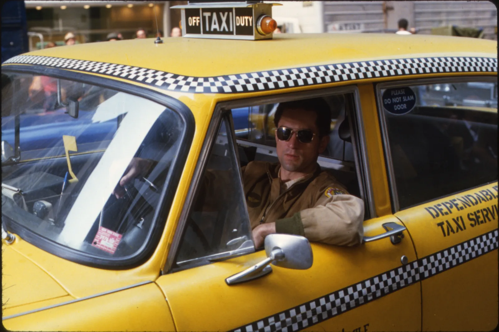
-
2 Requiem for a dream

-
3 Interstellar
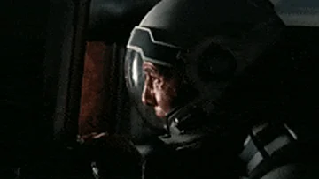
-
4 Apocalypse now
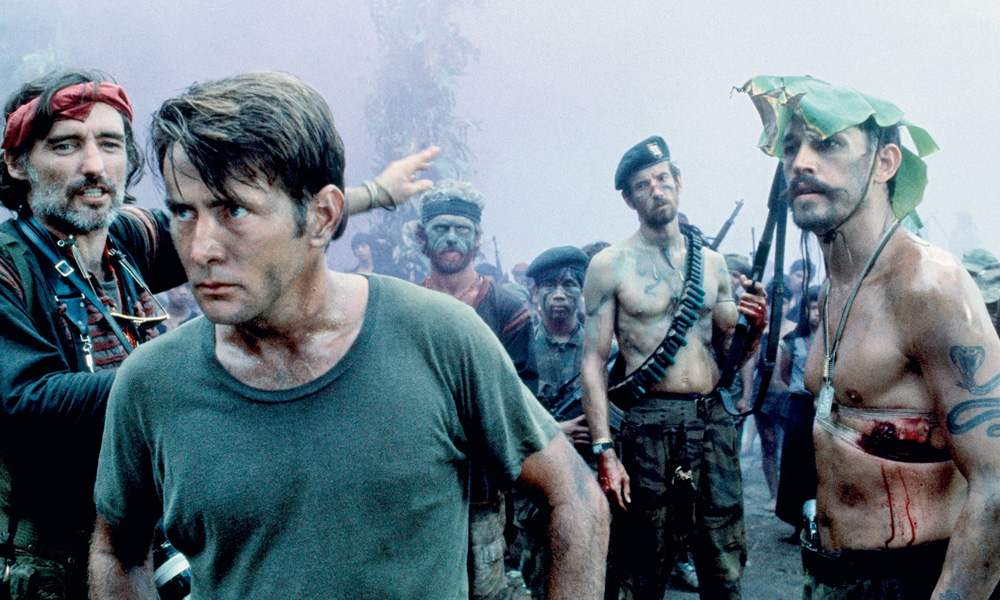
-
5 Pulp fiction
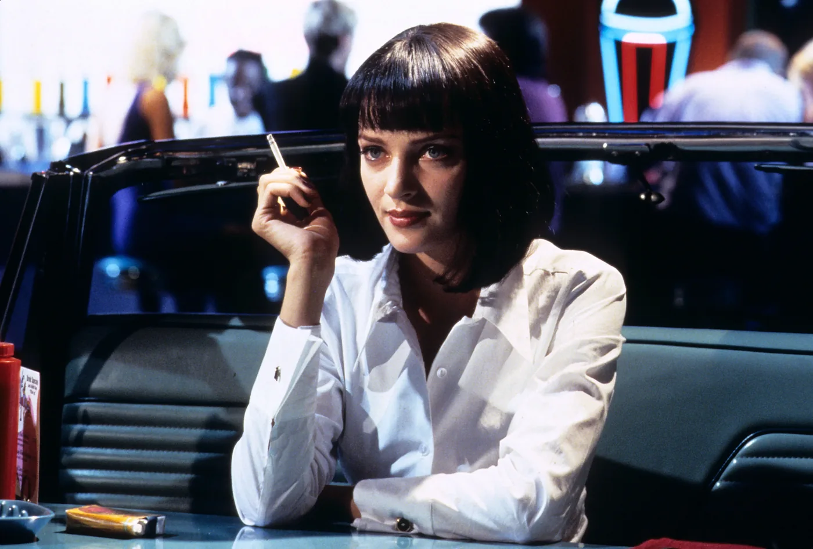
Series
-
1 Godfather
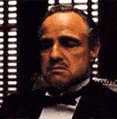
-
2 Harry Potter
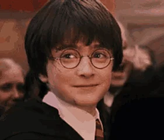
-
3 Lord of the Rings
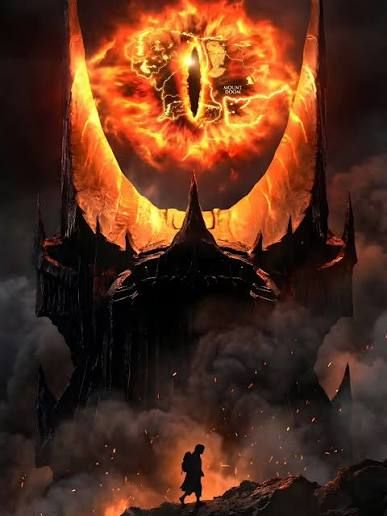
-
4 Jurassic park
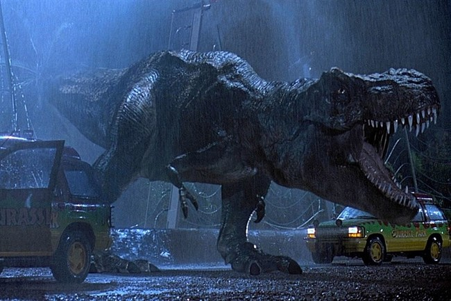
-
5 Terminator
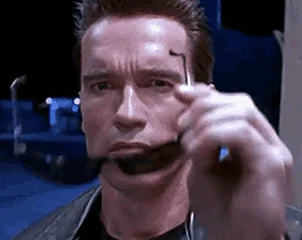
Soundtrack
-
1 Star wars
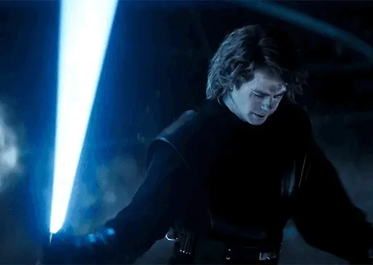
-
2 Rocky
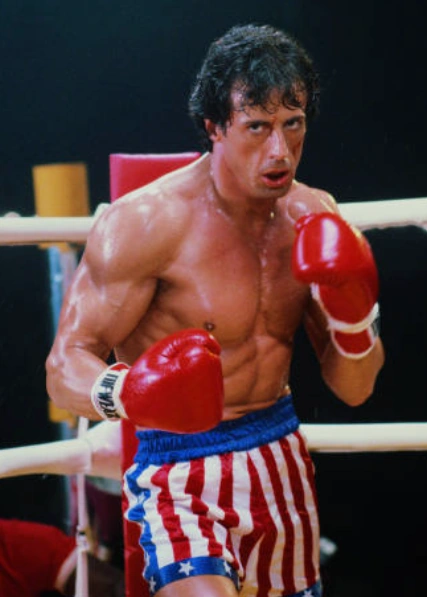
-
3 Halo
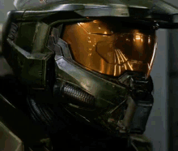
-
4 Pirates of the Caribbean
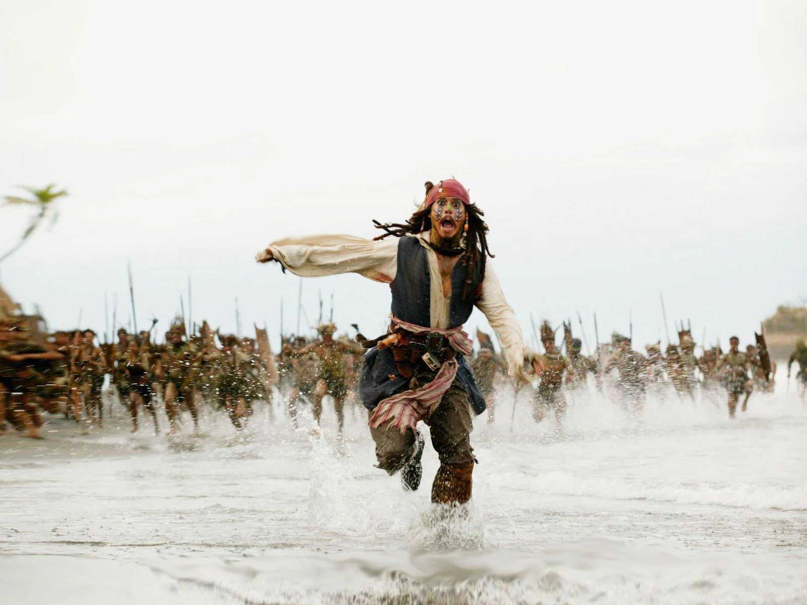
-
5 Godfather
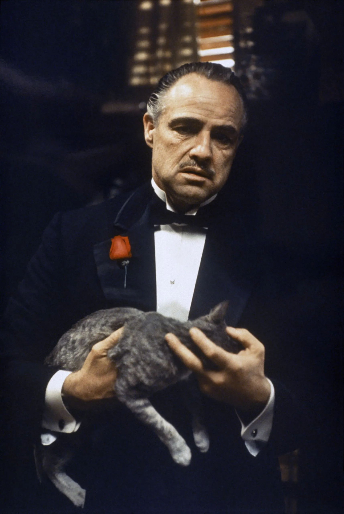
Plot-twist
-
1 Seven
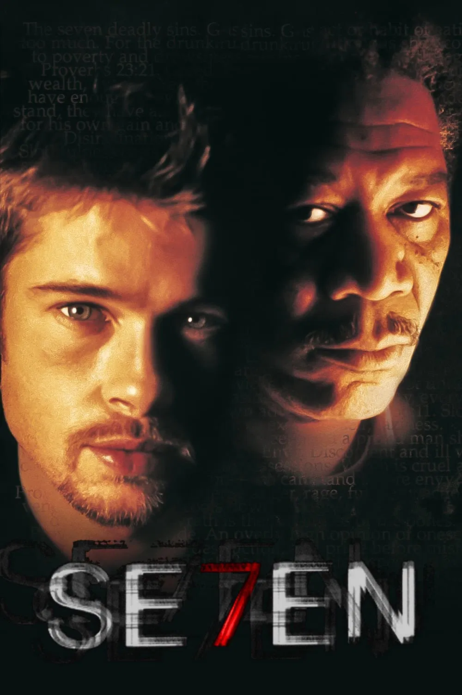
-
2 Twelve monkeys
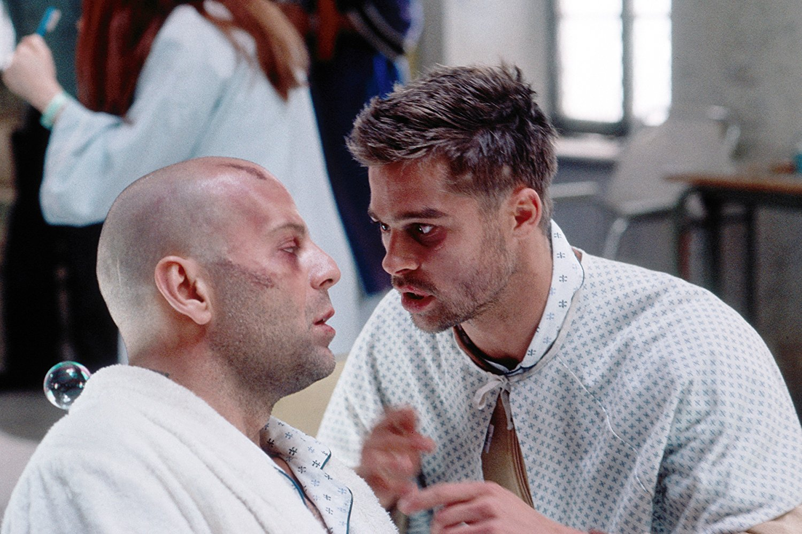
-
3 The Sixth Sense
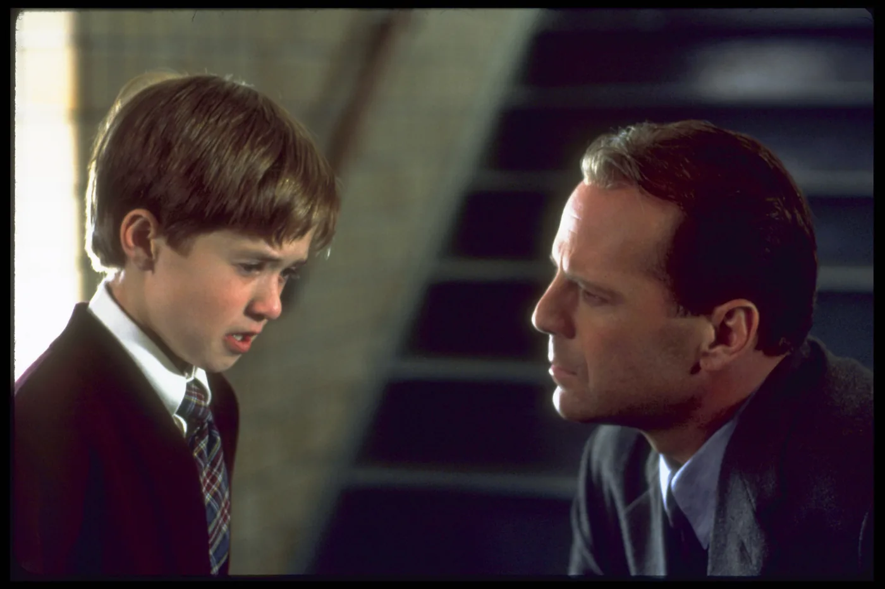
-
4 Fight club
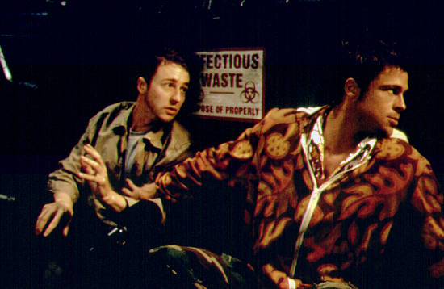
-
5 Parasite

Your turn
Pick your number one in each list. Press another to change it, or press yours again to take it back.
0 votes cast
Movies (standalone)
0 votesSeries
0 votesSoundtrack
0 votesPlot-twist
0 votesWho am I?
Try to guess who this actor is
I was born in New York in 1982. My first big role came with a movie where my character’s husband falls in love with another man. That movie received widespread critical acclaim and received eight nominations at the Oscar Awards. In 2006 I starred in a successful movie about the fashion industry alongside one of the best actresses in cinema history. I have been nominated for two Oscar Awards and have won one.
Show the answerHide the answer
Anne Hathaway
Our own Who am I
I was born in 1955 in Germany. My first big role came with a movie where my character got locked in a building with terrorists. That movie is considered one of the best action movies of all time. I participated in a movie which received seven nominations in the Oscars. Besides, it is Camilo’s favorite movie. I am unfortunately unable to act anymore because of a sickness.
Show the answerHide the answer
Bruce Willis